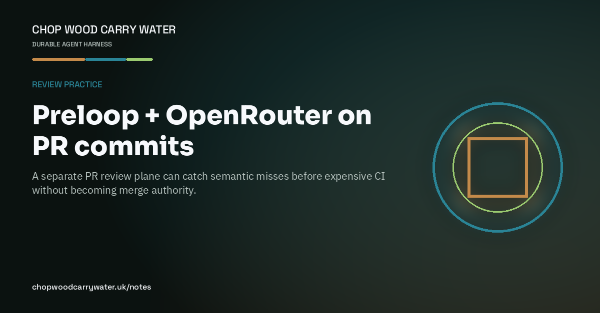

Review practice · 9th August 2026
Preloop + OpenRouter on PR commits
A separate PR review plane can catch semantic misses before expensive CI without becoming merge authority.

Desktop Preloop is one plane: tool policy and audit under Cursor’s human gates. The PR plane is different — and more useful when CI is scarce.
On product repos I wire a Preloop Cloud pull-request reviewer. OpenRouter is how that reviewer reaches models. Each push gets a GitHub commit status under context `preloop`. Actions can wait on that status before self-hosted jobs start, or leave the review async when I only want the signal.
It is not merge authority. It is not unit tests. It is shift-left: catch the semantic miss before the runner eats the afternoon. Keys stay vaulted. Humans still merge.